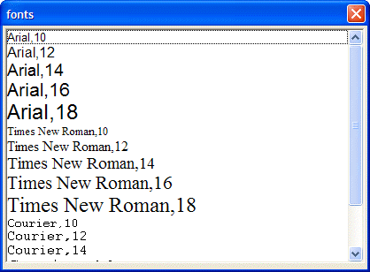

List Box D Directive
Syntax
%D%
Description
The D directive causes the line spacing in a list box to be adjusted automatically for the point size of the type being displayed.
Example
|
fonts = <<%str% Arial,10 Arial,12 Arial,14 Arial,16 Arial,18 Times New Roman,10 Times New Roman,12 Times New Roman,14 Times New Roman,16 Times New Roman,18 Courier,10 Courier,12 Courier,14 Courier,16 Courier,18 %str% ui_dlg_box("fonts",<<%dlg% [%d;O={F=@1}{J=CL}{@1}%.80,20font^#fonts]; %dlg%) |
This change causes the list box to be displayed like this:

See Also
Xdialog Language Directives and Operators, List Box Control Syntax
Supported By
Alpha Five Version 5 and Above